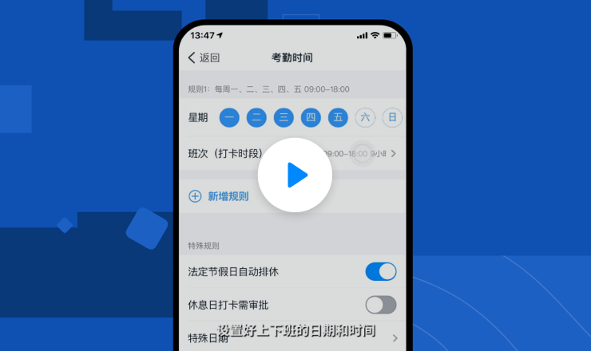
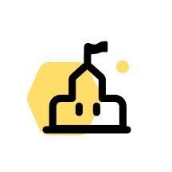

30秒快速上手钉钉

如何用钉钉 如何用钉钉 如何用钉钉
人性化考勤 视频会议 直播
在钉钉
工作简单高效更安全
 组织关系在线化 提高组织沟通效率 业务流程数字化
组织关系在线化 提高组织沟通效率 业务流程数字化

 校园管理信息化 提高家校沟通效率 成长沉淀数字化
校园管理信息化 提高家校沟通效率 成长沉淀数字化
如何用钉钉
如何用钉钉
直播
安全可靠的组织通讯录，快速找到同事，实现组织架构扁平化、可视化
组织沟通更加高效便捷，实现使命必达，激发组织中个体的创造创新力
助力组织的业务流程数字化/在线化支撑组织协同高效运转，加速组织变革
在钉钉
教育更简单成长更快乐
安全可控的家校沟通环境，老师更轻松，家长更安心
数字化呈现孩子成长的每一刻，成长过程清晰可见，让孩子成为最好的自己。
客户案例